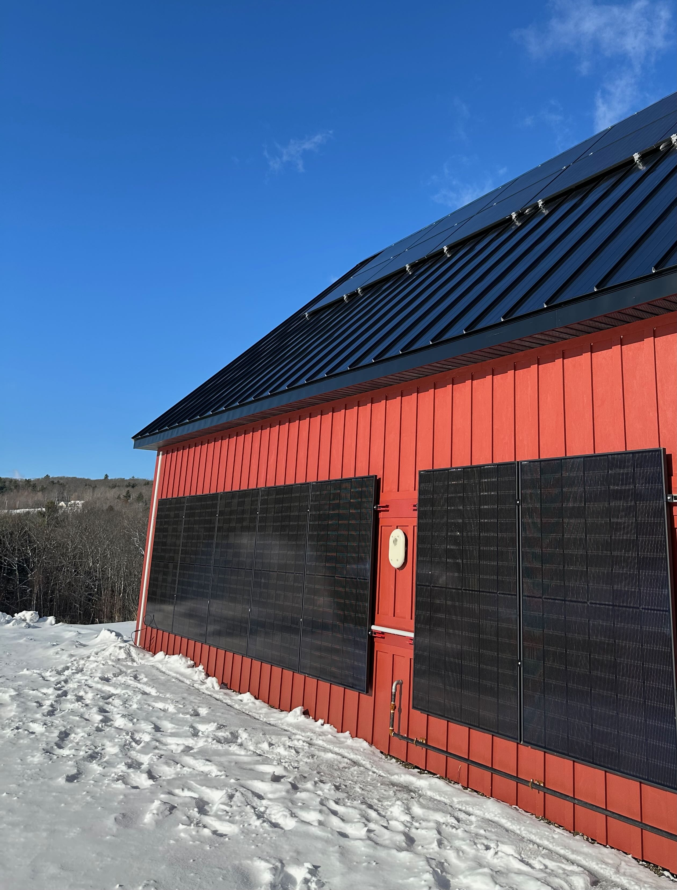
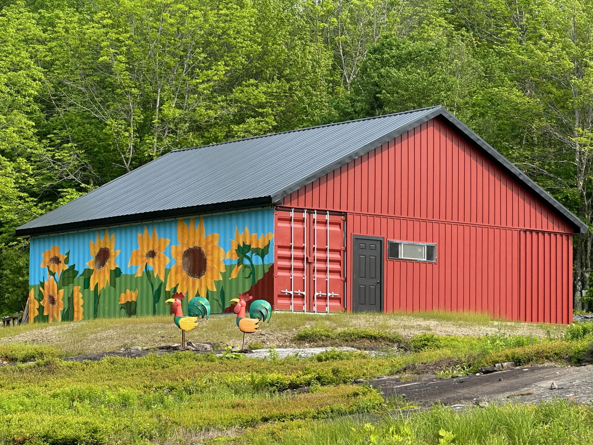
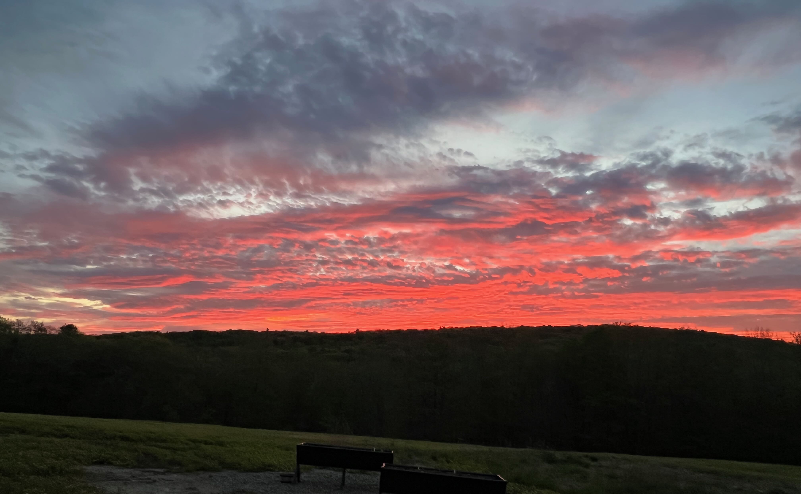
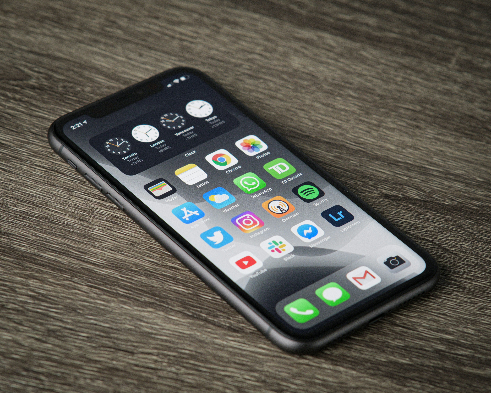

My Blogs
Click the Pic to go there

Living Off Grid (Solar)
We could throw a rock from our driveway and hit the utility poles that run alongside our property, but my wife and I decided to be completely off grid, and I decided do most of the work on that system myself. We haven’t regretted that for a minute and I hope I can help others who want to try something similar.

Growing and Building
In addition to its great solar exposure, one of the main reasons we purchased this property was to feel closer to nature, grow more of our own food, and build what we wanted to build (where and how we wanted to build it) with an emphasis on performance instead of convention. This is where I share some of what we’re doing and our fun, occasionally unconventional experiments.

Observations, Opinions, Rants
My views on people, community, government, and the world at large continue to morph, change, and evolve. I’ve been a Republican, a Democrat, a Libertarian, and an Independent. I’ve worked hard on community efforts, and I’ve been skeptical of their value. And I still don’t know what to make of many of my fellow humans.

Tools & Apps I Use
Sometimes people ask me about a tool or app I use to do something, track something, etc. Then they’ll either ask me to send them a link and I forget, or they say they’ll remember it but they don’t, and then they end up asking me again. Rather than go back and forth about these things, I’ve collected a list of my favorites here with a brief description of each, so I can just point people to the site. Enjoy!